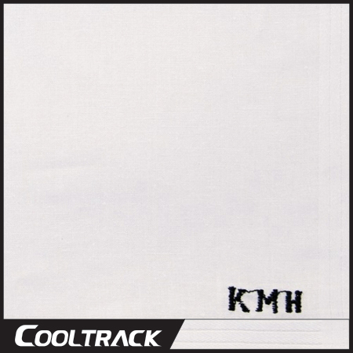

E sens
Album - The anecdote
Album - 이방인

이센스의 개인적인 이야기들을 담아낸 앨범이다.
하지만, 우리들이 공감하기 좋게 풀어냈으며 생각하게 만드는 앨범이다.
1. 주사위
그냥 이센스가 말하는 싫지만 인정해야 하는것을 말하고, 어렸을때 생각했던 방식을 대충 들여다 볼수 있다.
돈 많고 잘나가면 장땡이야
2. A-G-E
과거 크게 배신을 당한 이야기, 공감할수 있는 정해진 세상의 틀, 남들을 믿는 기준, 방식을 썼다 어떻게 해석해서 들을지는 청자들에게 달려있다.
3. Writer's Block
이센스의 작업부심, 자기가 생각하는 한국 힙합, 어찌보면 센스의 평범한 일상이야기도 묻어있다. 다른곡들에 비해서 밝은곡이다.
4. Next level
이센스의 고등학교 시절의 힙합 공연 이야기, 언더시절 이야기 그때의 재밌는 이센스의 생각이 묻어났다. 이 곡 역시 신명나는 가사와 박자로 다른 곡들과 비교해서 밝은 편이다.
5. 삐끗
이센스의 "살아보니 이렇더라"라고 생각한것. 알고보면 다 맞는말 결국 다 거기서 삐끗. 고개를 끄덕끄덕거리게 만드는 트랙
6. 10.18.14
다른 곡들에 비해서 짧은 트랙이다. 무슨 얘기를 하는건가 싶을수 있는데, 10.18.14(2014년 10월 14일)은 개코가 [화장지웠어]라는 곡으로 멜론차트 1위를 했다. 마지막 말은 개코를 비꼬는 말인듯 하다
Yeah~ 좋은 건 니가 다 해라 그냥
개털일땐 다 까더니 생기니 변하는구나.
구라야 전부. 멜론 1위 했던데? 어 Good Job.
7. The anecdote
이센스가 아닌 본명 강민호의 어릴적 삶을 이야기하는 트랙. 초반의 심각한 비트와 가슴을 때리는 훅이 인상적인 트랙이다. 앨범의 타이틀곡인 만큼 그냥 본인의 삶을 고백한다. 이 앨범의 타이틀 곡인 만큼 임팩트가 강하다.
8. Back In Time
이건 앨범이 나오기 전에 선공개가 된 곡이다. 자신의 삶을 썼다. 평범하게 보지 말고 들어보길 바란다.
9. Tick Tock (Feat. Kim Ximya)
The anecdote와 같이 타이틀곡이다. 유일하게 피쳐링이 함께 했다. 이센스의 심각한 강박증에 관련된 이야기를 썼고, 대마를 하게된 이유를 이해시키는 소름돋는 트랙. 김심야가 힙합신에서 주목을 받게 된 가장 큰 계기.
10. Unknown Verses
이센스만이 쓸 수 있는 담백한 가사다. 여러생각을 하게 되는 트랙의 마지막 곡이다.